A doença de Lyme (DL), também denominada borreliose de Lyme, é uma doença infecciosa, não contagiosa, transmitida por carrapatos do gênero Ixodes, causada por espiroquetas do complexo Borrelia burgdorferi. A doença apresenta um amplo espectro de manifestações clínicas devido às diferenças nas espécies infectantes.
Epidemiologia
A B. burgdorferi é a principal causa da doença nos Estados Unidos. As três espécies patogênicas, B. burgdorferi, Borrelia afzelii e Borrelia garinii, ocorrem na Europa e as duas últimas espécies foram identificadas na Ásia. A distribuição por idade na doença é bimodal: o primeiro pico é em crianças de 5-10 anos e o segundo em adultos com idade entre 35-55 anos.
Patogênese
Quando a espiroqueta está na pele, um dos três eventos pode ocorrer:
1) a espiroqueta ser dominada e eliminada pelos mecanismos de defesa do hospedeiro;
2) a espiroqueta permanecer viável e localizada na pele, onde produz o eritema migratório;
3) em dias ou semanas, a espiroqueta se disseminar pelas vias linfática ou hematogênica.
Depois de entrar na circulação, o organismo mostra um tropismo distinto para a pele, coração, sistema nervoso central, articulações e olhos.
Manifestação clínica. As manifestações da doença são divididas em três estágios: localizado, disseminado e persistente. Os dois primeiros estágios fazem parte da infecção precoce, enquanto a doença persistente é considerada infecção tardia. Na fase localizada, que ocorre entre 1-30 dias após a picada do carrapato, aparece o eritema migratório, que pode ser pruriginoso ou assintomático, associado a sintomas compatíveis à influenza, tais como febre baixa, calafrios, mialgia, artralgia, cefaleia. Podem ocorrer lesões múltiplas em 20% dos pacientes, resultado de disseminação hematogênica.
O Eritema migratório (Erythema migrans) é uma lesão eritematosa plana, geralmente redonda ou oval. As lesões únicas normalmente atingem um diâmetro de aproximadamente 16 cm. São encontradas mais comumente na fossa poplítea, dobras axilares ou glúteas. Nas crianças, couro cabeludo, rosto e cabelo são lugares especialmente comuns. A linfadenopatia regional pode ser vista e, uma febre de baixo grau é comum. Aproximadamente 70 a 80 por cento das pessoas com doença de Lyme terão essa erupção cutânea.
A DL disseminada geralmente se desenvolve 3-10 semanas após a inoculação e caracteriza-se pelo aparecimento de complicações articulares, neurológicas e cardíacas.
A fase tardia ou crônica refere-se a manifestações que ocorrem meses a anos após a infecção inicial. Os sinais e sintomas são principalmente reumatológicos e neurológicos, tais como: mialgia, artralgia, dor radicular, disestesias, sintomas neurocognitivos e intensa fadiga, durando mais de 6 meses. A Acrodermatite crônica atrófica (Acrodermatitis chronica atrophicans), característica cutânea da DL em estágio tardio, é encontrada quase que exclusivamente em pacientes europeus. Geralmente afeta mulheres mais velhas. Ao contrário do erythema migrans, tende a ocorrer acralmente, especialmente nas superfícies dorsais das mãos, pés, joelhos e cotovelos. No início, um eritema minimamente sintomático tende a ocorrer nesses locais. Inicialmente, há descoloração e inflamação; mais tarde, observa-se atrofia grave.
Diagnóstico
O diagnóstico é feito por meio da associação dos sintomas clínicos, dados epidemiológicos e testes laboratoriais. Os exames laboratoriais mais utilizados são ELISA, WB (Western Blot).
O diagnóstico da DL precoce pode ser feito apenas com dados clínicos, se a lesão característica do eritema migratório estiver presente em um paciente que vive ou viajou recentemente para uma área endêmica. O paciente com uma lesão característica é provavelmente soronegativo, uma vez que a lesão aparece antes do desenvolvimento de uma resposta imune diagnóstica e adaptativa. O teste de laboratório não é recomendado.
No momento em que o paciente apresenta achados de doença extracutânea disseminada precoce (por exemplo, meningite linfocítica, paralisia facial, radiculoneuropatia, cardiopatia com bloqueio cardíaco), testes sorológicos são tipicamente positivos, como são em pacientes com doença tardia de Lyme.
Os testes sorológicos devem ser realizados em pacientes que atendam a todos os seguintes critérios: 1) História recente de ter residido ou viajado para uma área endêmica; 2) Fator de risco para exposição a carrapatos; 3) Sintomas consistentes com doença disseminada precoce ou doença tardia.
Diagnóstico diferencial
O diagnóstico diferencial de DL é realizado com uma vasta gama de doenças: meningite serosa, artrite reumatoide, paralisia de Bell, dermatite de contato, lupus eritematoso sistêmico. As reações sorológicas falso-positivas podem ocorrer em pacientes com sífilis, mononucleose infecciosa, doenças reumáticas.
Tratamento
O tratamento da DL depende das manifestações clínicas da doença. Para adultos e crianças ≥ 8 anos de idade com doença inicial, recomenda-se o tratamento com um dos seguintes antibióticos: doxiciclina ( 100 mg VO 2x/dia para adultos e 2 mg/kg 2x/dia (dose máxima de 100 mg) para crianças ≥8 anos de idade); amoxicilina (500 mg 3x/dia para adultos e 50 mg/kg/dia 3x (máximo de 500 mg por dose) para crianças) ou axetil cefuroxima (500 mg 2x/dia para adultos e 30 mg/kg/dia em duas doses divididas (máximo de 500 mg por dose) para crianças). A duração do tratamento é de 21 dias. A antibioticoterapia intravenosa é indicada para manifestações neurológicas agudas da DL, com exceção da paralisia facial isolada, que geralmente pode ser tratada com antibióticos orais. Os antibióticos recomendados para doença neurológica aguda são: Ceftriaxona (adultos: 2 g IV 1x/dia; em crianças: 50-75mg/kg IV, 1x/dia, dose máxima de 2 g) ou Cefotaxima (adultos: 2 g IV de 8/8h; crianças: 150-200 mg/kg IV por dia dividido em três doses, dose máxima 6 g por dia) ou Penicilina G (adultos: 18-24 milhões de unidades por dia, IV dividida em 6 doses diárias; crianças: 200.000-400.000 unidades/kg por dia divididas em 6 doses diárias, no máximo 18 a 24 milhões de unidades por dia). Na paralisia facial isolada do nervo, o agente preferido é a doxiciclina 100 mg VO 2x/dia para adultos e 2 mg/kg 2x/dia (máximo de 100 mg por dose) para crianças ≥8 anos de idade. A duração do tratamento para a doença neurológica varia de 10 a 28 dias para meningite ou radiculopatia e de 14 a 21 dias para a paralisia do nervo facial. Para pacientes com doença neurológica tardia, é recomendado terapia IV com ceftriaxona, cefotaxima ou penicilina G durante 28 dias. Nos pacientes com acrodermatite crônica atrófica, está recomendado doxiciclina oral, amoxicilina ou axetil cefuroxima por 21 dias.
REFERÊNCIAS BIBLIOGRÁFICAS
1. A Review of Post-treatment Lyme Disease Syndrome and Chronic LymeDisease for the Practicing Immunologist. Wong KH, Shapiro ED, Soffer GK.Clin Rev Allergy Immunol. 2022 Feb;62(1):264-271. doi: 10.1007/s12016-021-08906-w. Epub 2021 Oct 23.
2. Lyme Disease. Skar GL, Blum MA, Simonsen KA.2024 Oct 1. In: StatPearls [Internet]. Treasure Island (FL): StatPearls Publishing; 2025 Jan–.PMID: 28613720
3. Lyme disease associated neurological and musculoskeletal symptoms: A systematic review and meta-analysis. Bushi G, Balaraman AK, Gaidhane S, Ballal S, Kumar S, Bhat M, Sharma S, Kumar MR, Sinha A, Khatib MN, Rai N, Sah S, Yappalparvi A, Samal SK, Lingamaiah D, Shabil M.Brain Behav Immun Health. 2025 Jan 2;43:100931.
4. Epidemiology and Diagnosis of Lyme Disease in the United States. Nielsen MC, Miller NS.Clin Lab Med. 2025 Mar;45(1):137-144.
5. Acrodermatitis Chronica Atrophicans. Gade A, Matin T, Rubenstein R, Robinson CA.2023 Jan 2. In: StatPearls [Internet]. Treasure Island (FL): StatPearls Publishing; 2025 Jan–.PMID: 33085436
Atlas de imagens 16

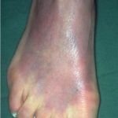

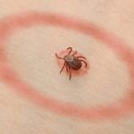

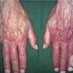

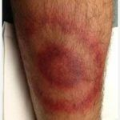

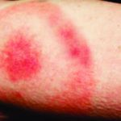

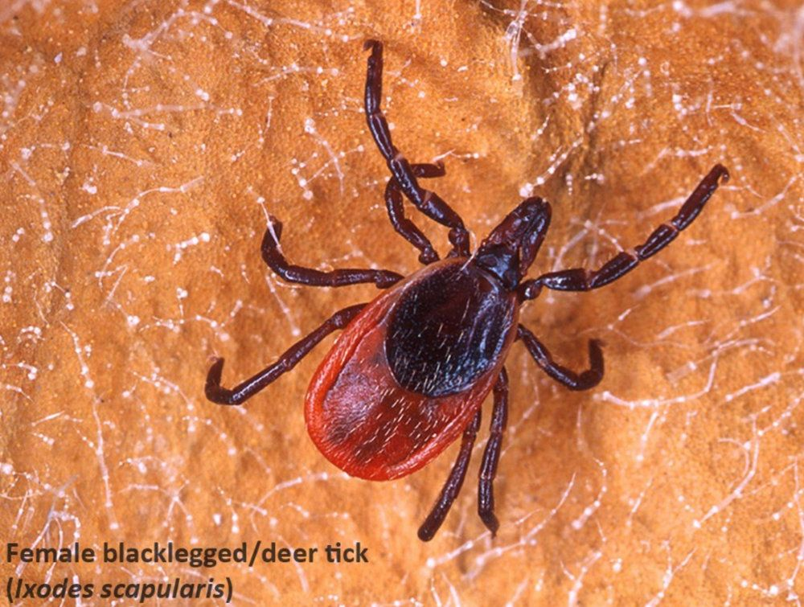

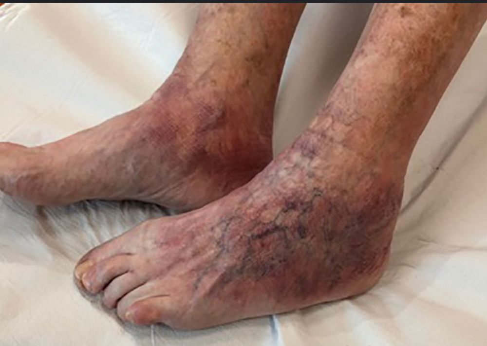

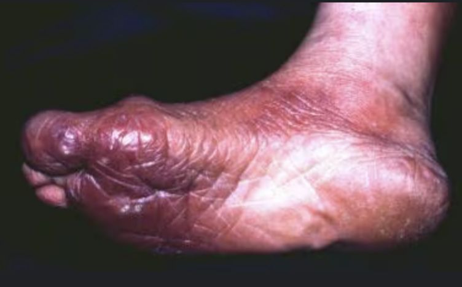

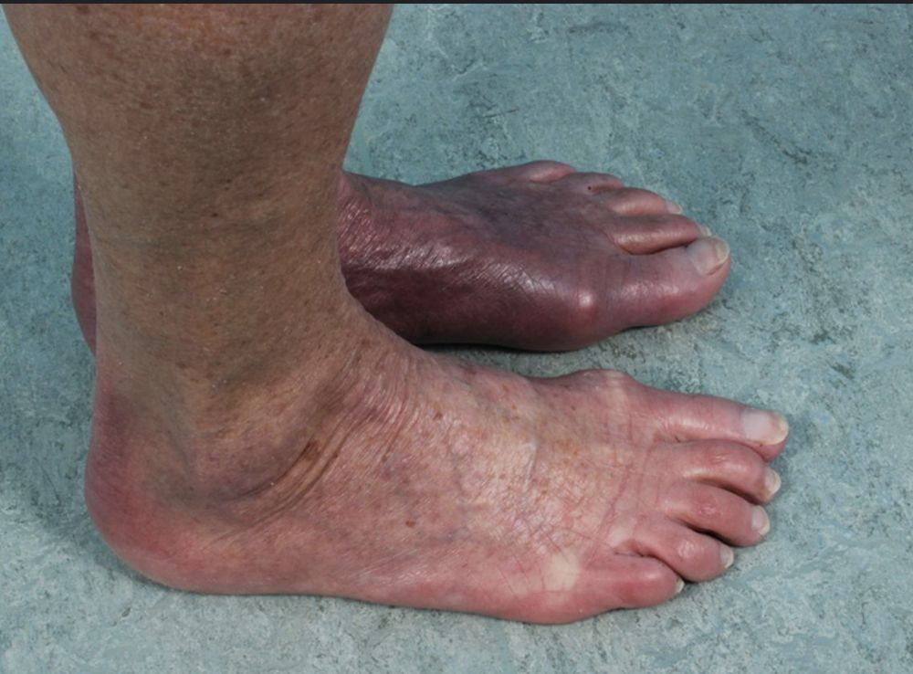

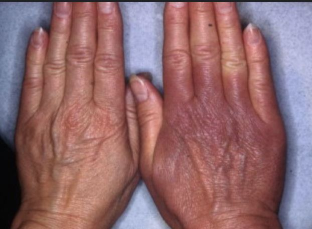

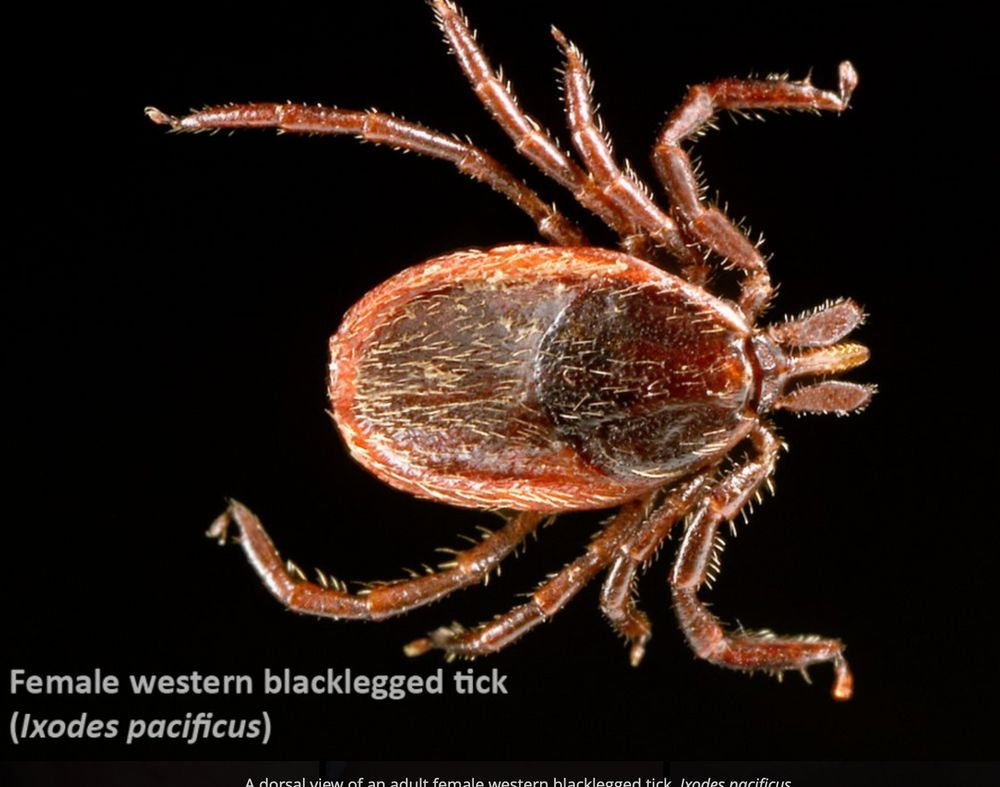

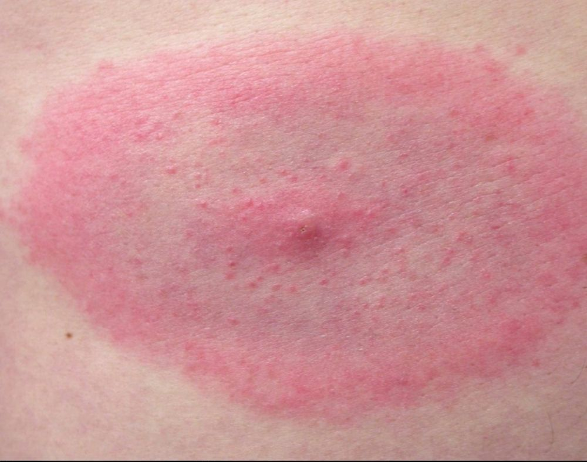

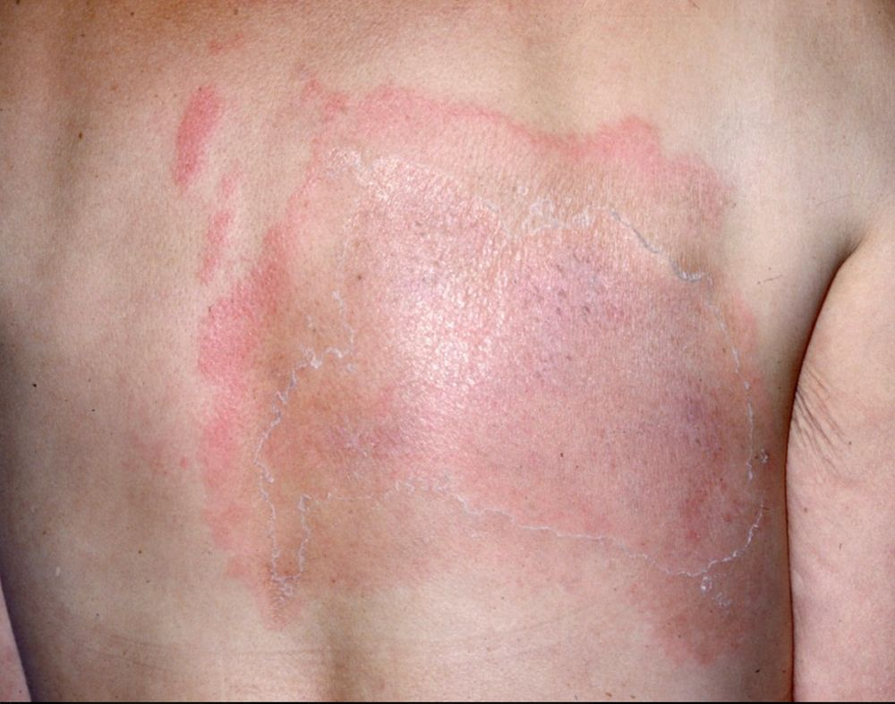

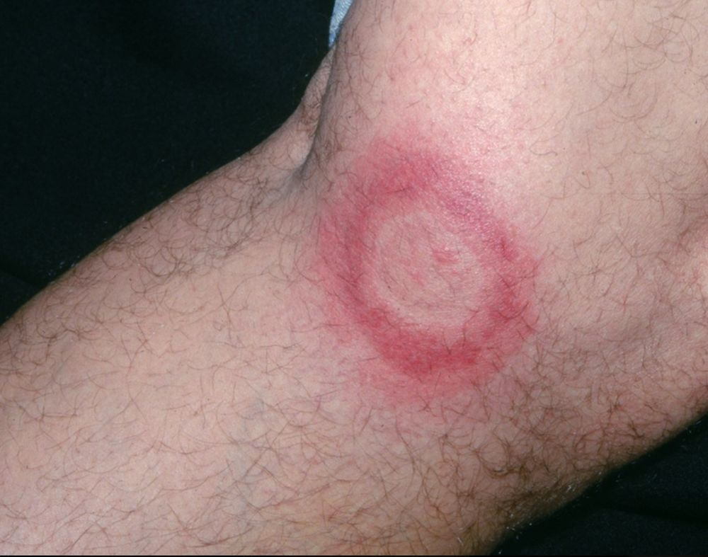

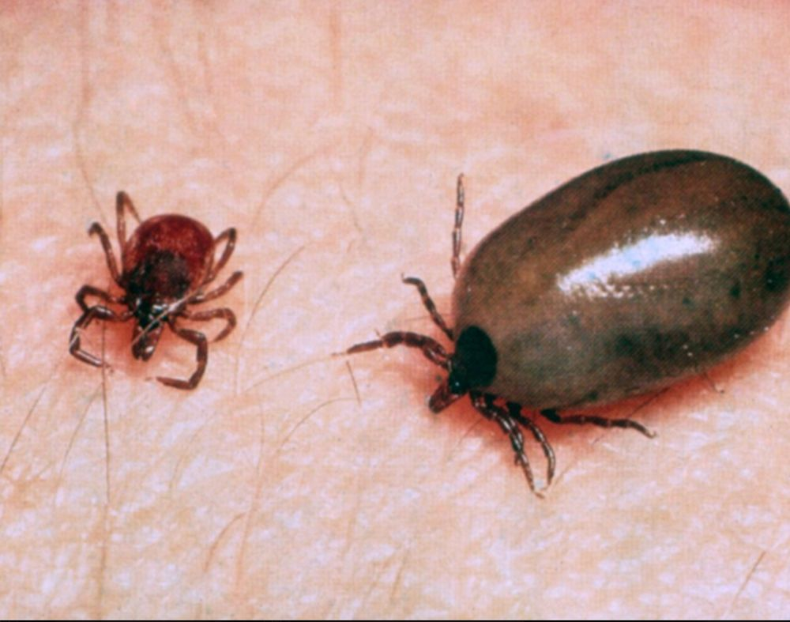

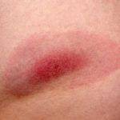
Na Skin Prime
Como podemos ajudar
O texto sobre Doença de Lyme não cita procedimentos específicos entre os oferecidos pela clínica. A conduta é definida em consulta: nossa equipe avalia as manifestações na pele e orienta o tratamento ou o encaminhamento adequado.